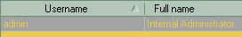
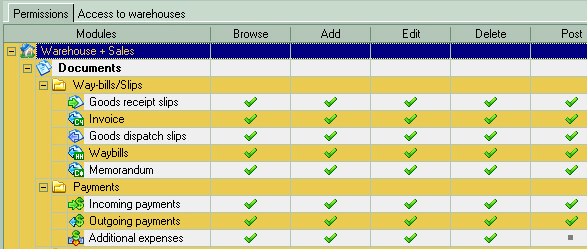

Here you can add and edit the permissions for the users of this database.
This is the current database users list. Each database have it's own settings, so each employee may have different access rights to each database in your possession.
 |
The upper part is a list of users and their names. Clicking on it will display the access right for this user in the table below. |
 The next part is the table of access rights for each type of document or software section. These are called modules in common. The actual access rights is presented as check mark Browse - User can browse through the lists of documents or entities (it's various directories, such as products, warehouses, business partners, banks, etc). Add - User can add new documents or entities. Edit - User can edit individual documents or entities. Delete - User can delete individual documents or entities Post is used for documents only and means that user can toggle posted state for the individual documents |
To create a new user and define the rights for him or her you need to click on "Add" icon or use "Ins" button on your keyboard. This will bring up an "Add/Edit user" window, which contains the list of main parameters displayed on the left side in the form of a tree. Clicking on "General" will allow you to enter all the data required to create a new username. In the "General" window enter a username and a full name of a new user into the appropriate fields. |